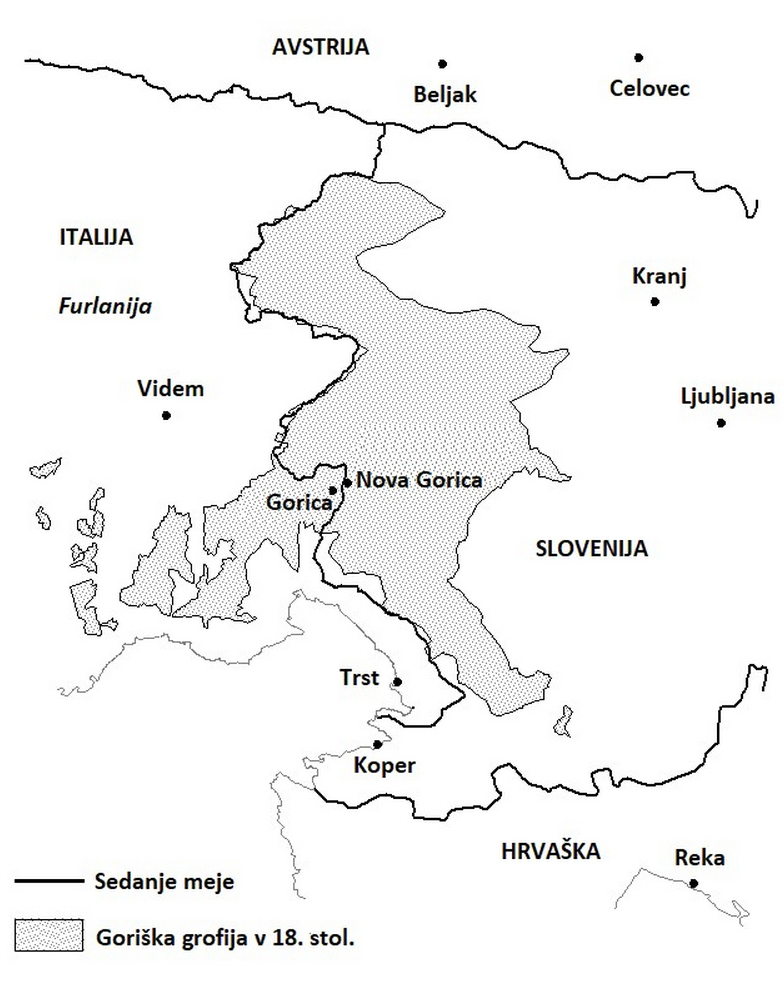

1Prispevek obravnava ključne prelomnice v zgodovini današnje zahodne meje med letom 1420, ki zaznamuje konec posvetne oblasti oglejskega patriarha, in letom 1866, ko obravnavana meja postane meddržavna meja med kraljevino Italijo in Avstrijo. Poudarek je na odseku med Goriškimi brdi in Predelom, ki ga je na podlagi predstavljene rekonstrukcije mogoče opredeliti kot eno najstarejših še obstoječih slovenskih meja. Predstavljeni so tudi arhivsko gradivo za raziskovanje zahodne meje v različnih obdobjih in arhivi, v katerih se nahaja.
2Ključne besede: zahodna slovenska meja, furlansko-goriški prostor, novi vek
1The contribution examines the crucial turning points in the history of the present-day western border between 1420, marking the end of the secular rule of the Patriarch of Aquileia, and 1866 when the boundary in question became the interstate border between the Kingdom of Italy and Austria. The focus is on the section between the Goriška Brda hills and the Predel pass, which can be defined as one of the oldest Slovenian borders still in existence based on the presented reconstruction. The archival materials relevant to the exploration of the western border during different periods and the archives in which they are located are also presented.
2Keywords: western Slovenian border, area of Friuli-Gorizia, the Modern Period
1Zgodovina sedanje zahodne slovenske meje je dolga in dokaj kompleksna, saj so se ob njej skozi stoletja zvrstili različni politični akterji in vojaški spopadi. V nasprotju s tezo, da je italijanska vzhodna meja »skozi zgodovino doživela pogoste premike«,1 v svojem goriško-furlanskem delu v zadnjih petih stoletjih izkazuje znatno dolgoživost in stabilnost. V pričujočem prispevku obravnavava ravno ta odsek. Vzporedno se je na tem območju oblikovala tudi slovensko-furlanska jezikovna meja, ki pa ni nikoli sovpadala s politično.2
2V novejšem slovenskem zgodovinopisju je avstrijsko-beneška meja v novem veku pretežno tematizirana kot obmejno območje in preučevana z vidika svojih političnih, socialnih in ekonomskih pomenov. Podobno lahko trdimo tudi za kasnejšo lombardsko-beneško mejo, ki je po letu 1866 prevzela vlogo državne meje.
3Med prispevki, ki se posvečajo nastajanju mejne ločnice v furlansko-goriškem prostoru in dogodkom ob njej v zgodnjem novem veku, gre poudariti članek Boga Grafenauerja v zborniku Zahodno sosedstvo, v katerem je z več vidikov predstavil oblikovanje slovensko-romanske etnične meje od zgodnjega srednjega veka do 20. stoletja, ter prispevek Petra Štiha, ki je v Gestrinovem zborniku objavil članek o vzhodni meji Italije v zgodnjem srednjem veku.3
4Stičišču goriško-furlanskega prostora, ki je po letu 1420 postal obmejno območje med habsburškimi deželami in beneško republiko, so se v zadnjih desetletjih posvetili raziskovalci, ki so v glavnem preučevali razvoj in zaton goriške grofije, njen obstoj, vpliv in povezave z bližnjim furlanskim in kraškim območjem. Med njimi velja omeniti Petra Štiha, ki je ob 500-letnici prve omembe Gorice objavil študije o Gorici, goriških grofih in njihovih ozemljih na Goriškem, Kranjskem in v Istri, Vojka Pavlina, ki se je enako posvetil goriški dinastiji ter njenemu ozemlju ob Soči, in Miho Kosija, ki se Goriških dotakne v kontekstu njihovih posesti na Krasu, posebno poglavje pa posveti tudi prvi habsburško-beneški vojni. V delih Pavlina in Kosija ni spregledano niti dogajanje v letu 1420, ki je imelo izrazit vpliv tudi na goriški prostor.4
5Slovensko zgodovinopisje se prične intenzivneje posvečati furlansko-goriškemu obmejnemu območju po prvi habsburško-beneški vojni, ko se dejansko vzpostavi mejna ločnica med habsburškimi deželami in Beneško republiko. To dejanje je imelo za prebivalce z obeh strani velik vpliv na več področjih. Za Nadiške doline v Beneški Sloveniji je to, da so postale obmejno območje, postalo temeljni dejavnik za ohranjanje samoupravne ureditve iz časa oglejskega patriarhata in dodatno prejemanje privilegijev od Republike.5 Priključitev grofije v habsburški prostor in izgradnja cestne povezave med Gorico in Koroško sta spodbudili gospodarski razvoj, ki je temeljil na trgovskih izmenjavah, nelegalnem trgovanju in migracijah ter povzročil hitro demografsko rast, tudi na račun priseljencev z beneškega in furlanskega ozemlja. Po drugi strani je zamrla trgovina skozi Nadiške doline, ki je svoj vzpon doživela z zastavo tolminske gastaldije Čedadu v 14. stoletju.6 Podobne vsebine slovensko zgodovinopisje obravnava tudi za obdobje po drugi habsburško-beneški vojni. Poleg demografskih in ekonomskih posledic vojne7 je pozornost usmerjena v proučevanje gospodarskih, socialnih in okoljskih vidikov obmejnega prostora ter kmečkega prebivalstva.8 Posebej aktualno je raziskovanje neagrarnih dejavnosti kmečkega prebivalstva ter njegovega ekonomskega in socialnega položaja v okviru koncepta integrirane kmečke ekonomije, v katerega so vključene tudi Goriška s Posočjem in Brdi ter Nadiške doline.9 Prav tako je zanimanje zaznati v proučevanju rabe pašnih in gozdnih virov ter lastništva zemljišč v goratem območju Tolminskega in Benečije.10 Tema bi omogočila nov vpogled v razumevanje socialnih stikov obmejnega, pretežno kmečkega prebivalstva in njihovega upoštevanja oziroma interpretiranja dogovorov o skupni rabi zemljišč višjih instanc na lokalni ravni. Kot pomemben vir za preučevanje furlansko-goriškega obmejnega prostora velja poudariti novoveško goriško in furlansko historiografijo, ki jo je dosledno preučila Neva Makuc.11 Njeno delo vsebuje opise posameznih avtorjev in predstavitev njihovih del, ki so bogat vir sicer subjektivnih opisov pomembnih dogodkov v njihovem času in v omenjenem prostoru. Na njihovi podlagi je obravnavala kolektivne identitete, ki so soobstajale v furlansko-goriškem prostoru, kot so plemiška identiteta in njen odnos do prebivalstva, deželna oziroma lokalna zavest, jezikovna identiteta in »etnični« izvor ter stereotipni pogledi furlanskih historiografov na druga ljudstva in prebivalstvo. Posvetila se je tudi temi, kako historiografija Furlanije in Goriške obravnava slovensko zgodovino.
6Med zgodovinopisci, ki obravnavajo goriški oziroma primorski prostor v 19. stoletju, izstopa Branko Marušič.12 Omenimo njegov prispevek, ki zajema primorski prostor v obdobju od sredine 18. stoletja do konca druge svetovne vojne. V njem se posveča zgodovinskim spremembam in različnim upravnim ureditvam v omenjenem obdobju, ki so jih zaznamovale spremembe meje in oblasti, pri tem pa v ozir zajame širše območje na obeh straneh meje.13
7Združitev beneškega prostora z Avstrijskim cesarstvom po propadu Napoleonovih provinc v začetku 19. stoletja in predvsem njegova ponovna priključitev Kraljevini Italiji, ki jo je pospremil plebiscit v Benečiji, tvorita sklop zgodovinopisnih tem, ki se nanašajo tudi na zahodni obmejni prostor. Kot omenjeno, je to obdobje za slovenske zgodovinopisce zanimivo pretežno z vidika plebiscita, ki je potekal v Beneški Sloveniji. Branko Marušič in Giorgio Banchig v svojih prispevkih raziskujeta pravni položaj Beneških Slovencev pred letom 1866 in po njem, pri čemer skuša Banchig prikazati tudi različne vidike, povezane z lokalnim prebivalstvom, in vzroke za njegovo odločitev o plebiscitarnem vprašanju.14 Povečan interes za raziskovanje beneškega plebiscita se je pokazal ob njegovi 150-letnici, ko je v Špetru Slovenov potekal simpozij (21. oktober 2016). Prispevki nekaterih nastopajočih so bili objavljeni v Goriškem letniku 2019. Med njimi velja poudariti prispevek Tanje Gomiršek, ki se je posvetila sorodstvenim, trgovskim in kulturnim povezavam prebivalstva Goriških brd in Beneških Slovencev.15 Prispevke, posvečene Beneški Sloveniji v 19. in tudi 20. stoletju, najdemo tudi v zborniku Simon Rutar in Beneška Slovenija.16 Poleg navedenih zgodovinopiscev se je mejni tematiki v 19. stoletju posvetil tudi geograf Vasilij Melik, ki je v že omenjenem zborniku Zahodno sosedstvo obravnaval spreminjanje meje in ključne dogodke ob tem med letoma 1797 in 1866 na območju Beneške Slovenije.17 V istem zborniku se je pravnim vidikom avstrijsko-pruske vojne, razmejitvi in plebiscitu v Benečiji posvetil tudi pravnik Jaromir Beran.18 Njuni študiji sta bili podlaga drugim zgodovinarjem pri preučevanju italijansko-avstrijske meje in beneškega plebiscita.
8Na koncu velja omeniti še dela Simona Rutarja o goriško-gradiški grofiji, Tolminski in Beneški Sloveniji s konca 19. stoletja.19 Kljub temu, da so z vidika zgodovinopisja presežena, so še vedno dragocen vir informacij in zgodovinskih dejstev za obdobje 19. stoletja.
9Namen prispevka je predstaviti pomembnejše prelomnice v zgodovini meje, ki je v 20. stoletju postala sedanja zahodna slovenska meja, skozi dolgoročno perspektivo od konca srednjega do konca novega veka. Obravnavo pričenjava z letom 1420, ko je goriška grofija prešla pod Beneško republiko in nato po letu 1500 ter vojni med Habsburžani in Benečani postala ena od habsburških dednih dežel, meja pa se je za daljši čas ustalila. Sporazumi, ki so določili habsburško-beneško mejo po vojni, so predvidevali posamezna območja na meji, ki naj bi jih koristile skupnosti z obeh strani meje, vendar je med njimi prihajalo do sporov. To je bil tudi eden od vzrokov za izbruh nove vojne med Habsburžani in Benečani v 17. stoletju. Težnje po ureditvi in točnejši določitvi meje so se nato pokazale šele v drugi polovici 18. stoletja. Po padcu Beneške republike leta 1797 in hitrih upravnih spremembah v času Napoleona je obveljala nova lombardsko-beneška meja, ki je bila v bistvu administrativna ločnica znotraj Avstrijskega cesarstva. Do leta 1866 je bilo tako slovensko etnično ozemlje združeno, po tem letu pa je upravna meja postala državna meja med Kraljevino Italijo in Avstrijskim cesarstvom (kasneje Avstro-Ogrsko) ter kot taka obveljala do prve svetovne vojne. Poudarek je na odseku med Predelom in Goriškimi brdi, ki je ostal dolgoročno najstabilnejši in v dobri meri odgovarja današnji slovensko-italijanski meji. Večinoma izpuščeni so odseki današnje meje severno od Predela ter južno od Gorice na območju Krasa in Istre.
1V začetku 15. stoletja sta stičišče današnjega zahodnega goriško-furlanskega območja upravljali dve večji politični sili, oglejski patriarhat in goriška grofija. Goriški grofje so do 13. stoletja zgradili obsežen dominij, ki je med drugim zajemal ozemlje ob srednjem toku Soče, Vipavsko dolino in del Krasa, s središčem v Gorici. To posest so Goriški izdvojili iz ozemlja oglejskega patriarhata, predvsem na račun dednega odvetništva, ki so ga imeli nad oglejsko cerkvijo, ter vojaških spopadov s patriarhi.20 Goriški so obvladovali ne le goriški prostor, temveč tudi širok lok ozemelj v vzhodnem alpsko-jadranskem prostoru od Tirolske do Kvarnerja. Na drugi strani je oglejski patriarhat ob meji z goriško grofijo poleg nižinske Furlanije zajemal doline Tera in Nadiže ter zgornje Posočje. 21
2Oglejski patriarhat se je zadnja štiri desetletja posvetne oblasti spopadal s številnimi težavami, ki so se kazale v pogosti menjavi patriarhov in šibkosti njihovega vodstva, finančni nestabilnosti, predvsem pa medsebojnih sporih plemiških družin in mest, med katerimi sta bila največja tekmeca Čedad in Videm. Začetki spora med mestoma segajo v čas vojne za Chioggio (1378–1381). Da bi takratni patriarh lahko ubranil posesti v Istri, ki jih je ogrožala močna beneška vojska, je bil za pridobitev finančnih sredstev leta 1379 primoran podeliti tolminsko gastaldijo mestu Čedadu v zameno za 5600 mark. To sicer ni bila prva takšna podelitev, in čeprav je bila časovno omejena in obnovljiva, se Tolmin nikoli več ni vrnil pod neposredno patriarhovo oblast. Čedadska občina je gastaldijo dala v upravljanje skupini čedadskih meščanov. Leta 1396 je mesto pridobilo še pravico do odprtja ceste proti Beljaku, s čimer si je zagotovilo pomembne trgovske povezave s Kranjsko in Koroško.22 Posedovanju tolminske gastaldije in nadzoru nad trgovskimi potmi je nasprotoval Videm, kar je preraslo v dolgotrajne spore med mestoma, ki so se sčasoma razširili na lokalno in širšo regionalno raven. Sledila so leta konfliktov med Čedadom, patriarhi in drugimi furlanskimi mesti, ki so jih podpirali goriški grofje, gospodi Padove in Carrare ter ogrski kralj na eni strani, ter mestom Videm in močno plemiško družino Savorgnan, ki so jo podpirale Benetke na drugi strani.23
3V začetku 15. stoletja, v obdobju zahodne shizme, so se notranji konflikti v Furlaniji razširili še na versko področje. Vmešavanje obeh papežev v volitve patriarha je leta 1409 privedlo do obstoja dveh patriarhov, ki ju je po posredovanju ogrskega kralja Sigismunda Luksemburškega nasledil Ludvik von Teck. Imenovanje Ludvika se umešča v kontekst sporov in konfliktov, ki so sprva potekali v Furlaniji, od leta 1411 pa so se razširili zaradi neposrednega posredovanja ogrskega kralja, ki je zahteval Istro, Furlanijo in Dalmacijo. Ker pogajanja med velesilama o Dalmaciji niso prinesla dogovora, je Sigismund leta 1411 poslal v Furlanijo vojsko, ki jo je zasedla, vključno z Vidmom. Sprti strani sta leta 1413 dosegli premirje, ki se je zaključilo leta 1418 z vstopom Benečanov na ozemlje patriarhata. Sigismund je podcenil vojaško sposobnost republike, ki je leta 1419 začela osvajati Furlanijo.24 Sprva se je Benetkam predal Čedad, njegovemu zgledu pa so sledila še druga furlanska mesta in gradovi. Patriarh je s pomočjo ogrske vojske poskušal ponovno osvojiti Čedad, vendar je bilo obleganje mesta, ki je imelo pri tem pomoč beneške vojske, neuspešno. Osvajanje Furlanije se je nadaljevalo in zaključilo leta 1420, ko se je Republiki predal Videm.25
4S tem je bilo konec posvetne oblasti oglejskega patriarhata. Beneški teritorij, ki je zajel tudi Beneško Slovenijo, zgornje Posočje z Idrijo, se je pomaknil do meja ozemlja goriške grofije, habsburškega Trsta in Devina, ki je bil avstrijski fevd. Goriški grofje, odvetniki oglejskih patriarhov in Sigismundovi zavezniki, so bili po zavzetju patriarhata z Benečani primorani skleniti mir, leta 1424 pa je grof Henrik od doža kot pravnega naslednika patriarhata sprejel nekdanje oglejske fevde.26 Goriška grofija je tako ob zahodni meji dobila močno politično in vojaško silo, ki pa ni bila edina, ki jih je obkrožala. Težnje po dostopu do morja in obvladovanju trgovskih poti na svojem jugozahodnem teritoriju so Habsburžane približale goriškemu in kraškemu območju že sredi 14. stoletja. Poleg tega jim je s spretnim sklepanjem pogodb uspelo pridobiti goriške posesti, grofijo v Marki in Metliki, pazinsko grofijo v Istri ter Tirolsko. Politično in posestno oslabljena goriška grofija se je tako po letu 1420 znašla v neugodnem položaju med dvema velesilama, Habsburžani na vzhodu in Beneško republiko na zahodu, ki sta se v svoji moči prvič resno pomerili po smrti zadnjega goriškega grofa.27
1Benetke so po prevzemu Furlanije in padcu posvetne oblasti patriarhata goriške grofe obravnavale kot svoje vazale, ki so od patriarha dobili Gorico kot službeni fevd za izvajanje odvetništva, medtem ko so Habsburžani z Goriškimi od leta 1361 podpisali več dednih pogodb. Poleg tega je bila goriška državno neposreden fevd. Goriški grofje so tako bili državni knezi cesarstva (od leta 1365) in obenem beneški vazali po fevdalni tradiciji. S pridobitvijo goriškega teritorija bi beneška stran utrdila ozemlje ob meji s cesarstvom, medtem ko so imeli za Maksimiljana prehodi čez Sočo pomembno vlogo pri njegovih ambicijah v Italiji.28
2Zadnji goriški grof Leonhard je ob spoznanju, da bo umrl brez potomcev, leta 1497 s Habsburžani sklenil permutacijsko pogodbo, po kateri je Maksimiljanu odstopil furlanska gospostva in Latisano v zameno za Vipavo in stara goriška gospostva na Zgornjem Koroškem. Habsburžan je z utrjevanjem krajev, ki so segali v beneški prostor, sprožil buren odziv Benetk in vojaško napetost v obmejnem območju.29 Po Leonhardovi smrti leta 1500 je izkoristil dejstvo, da so bile Benetke v vojni s Turčijo (1499–1502), ter s svojimi odposlanci zasedel Gorico in Lienz, glavni središči goriške grofije. Benetke so si prizadevale spor rešiti z diplomacijo, vendar so bile pri tem neuspešne.
3Spor je ostal nerešen do leta 1508, ko Benetke kralju niso dovolile na cesarsko kronanje v Rim čez svoje ozemlje. S tem se je začela prva habsburško-(avstrijsko)-beneška vojna, ki je spadala v širši kontekst evropskega spopada za Italijo s Francozi oziroma vojn za Italijo.30 Na goriškem območju je bila v prvem letu vojne, pri nas poznane kot prva avstrijsko-beneška vojna, uspešnejša Beneška republika, ki je zasedla Gorico in dele Goriške na Krasu skupaj s Postojno. Maksimiljan je bil primoran skleniti premirje z Benetkami, vendar se je že konec istega leta izoblikovala protibeneška cambraiska liga, v kateri sta med drugimi združila moči cesarstvo in Francija. Maksimiljanu je v naslednjem letu uspelo ponovno zavzeti goriške posesti in zasesti Gorico ter pridobiti Tolminsko in Bovec. 31 Vojno so zaznamovala huda pustošenja dežel in izčrpavanja prebivalstva ter menjave zavezništev in uspehov v širšem kontekstu. Leta 1511 sta Furlanijo dodatno prizadela močan potres in upor kmečkega prebivalstva, ki je bil posledica gospodarskih ter pravnih ukrepov deželnega parlamenta in fevdalcev ter splošnih nestabilnih institucionalnih razmer v deželi.32 Vojna se je zaključila leta 1516, med Benetkami in cesarstvom pa je bilo sklenjeno premirje. Dokončni mir so sprte strani sklenile v Wormsu v letih 1521 in 1523.
4Habsburškim deželam so bili poleg Goriške z Brdi priključeni še Zgornje Posočje (Tolmin, Kobarid, Bovec) z Idrijo, del Krasa z Brkini ter Marano, Oglej in Gradišče ob Soči. Benetkam je ostala Furlanija s Čedadom in Beneško Slovenijo, priključeni pa so ji bili še Pordenone, Belgrado, Castelnuovo in Codroipo.33 Ta vzpostavitev meje med Beneško republiko in habsburškimi deželami je trajala do leta 1797, v zgornjem Posočju pa je njen potek (približno) isti še danes.
5Veliko vprašanj o razmejitvi, pripadnosti posameznih krajev ter posestnih in drugih pravic prebivalstva na obeh straneh je ostalo nedorečenih. Meja ni bila jasno definirana in začrtana, kar je kasneje povzročalo hude spore med prebivalstvom ob njej. Pogosto je do konfliktov prihajalo zaradi rabe obmejnih kmetijskih površin (pašnikov, polj, gozdov) z nedorečenim lastništvom, ki naj bi jih po skupnem dogovoru izkoriščale skupnosti z obeh strani nove meje.34 Takšne razmere zasledimo na primer v Nadiških dolinah, o čemer bo več zapisanega v nadaljevanju. Ohlapna določitev meje je vplivala tudi na posestne pravice fevdalcev na določenih območjih, kar sta beneška in avstrijska stran skušali rešiti v Tridentu leta 1535. V tem oziru velja posebej omeniti primer tolminske gastaldije, ki je po vojni prešla pod Habsburžane, medtem ko je konzorcij družin, ki jo je upravljal, prebival v Čedadu na beneški strani. To stanje je povzročilo vrsto vprašanj o posesti in pristojnosti konzortov znotraj novega institucionalnega sistema. Njihova in tudi druga sporna vprašanja glede nove meje na prostoru med beneško Furlanijo in habsburško Goriško so bila obravnavana v arbitražnem postopku. Sklenjen je bil kompromisni sporazum, imenovan »Tridentinska razsodba« ( Sententia Tridentina), ki je bil sprejet 17. junija 1735 in po katerem je med drugim Čedadu, tolminskim konzortom in drugim plemičem z beneške strani uspelo v priznanju in uveljavitvi svojih zahtev do posestnih in sodnih pravic na habsburškem ozemlju. Omenjeni sporazum predstavlja pomemben bilateralni diplomatski dokument, ki obravnava in opredeljuje pravice in pristojnosti obeh držav ter lokalnih akterjev – plemičev in skupnosti – vzdolž celotnega habsburško-beneškega obmejnega območja od Tirolske do Istre, a ne določa natančnega poteka meje na terenu.35
1Skoraj stoletje po prvi avstrijsko-beneški vojni je izbruhnila nova. Vzrokov za ponoven vojaški spopad je bilo več, tako na kopnem kot na morju. Med glavnimi sta bila nedorečenost furlansko-goriškega odseka meje na posameznih predelih in pereče uskoško vprašanje. Uskoki so napadali in ropali beneške trgovske ladje ter se spopadali z beneškim vojaškim ladjevjem pri Istri, v Kvarnerju in Dalmaciji, poleg tega pa so napadali tudi osmanske trgovske ladje, saj so se imeli za krščanske bojevnike, pri čemer so imele Benetke z Osmani sklenjene sporazume, na podlagi katerih so jim morale zagotavljati varnost plovbe. Obenem so Uskoki tedaj delovali kot nekakšna mornarica obmorskega dela vojne krajine v službi Habsburžanov, ki so si prizadevali za večjo svobodo plovbe, vendar so Jadran nadzirale Benetke.36
2Vojaški spopad, ki je v zgodovinopisju znan pod imeni druga (notranje)avstrijsko-beneška vojna, habsburško-beneška vojna, vojna za Gradišče in uskoška vojna, je začela beneška stran konec leta 1615. Na Goriškem je bil njen cilj potisniti mejo na Sočo in tako pridobiti nadzor nad ključnimi potmi, ki so Furlansko in Padsko nižino prek Gorice in Trsta povezovale s Kranjsko in Ogrsko. Hkrati je bil beneški motiv poenostavitev poteka meje na kopnem, ki bi odpravila dediščino prve avstrijsko-beneške vojne v nižinskem svetu v obliki številnih enklav in eksklav. Benečani so na primer želeli utrjeno Gradišče zamenjati za svojo eksklavo Tržič. Glavnina vojaških spopadov se je odvijala v Gradišču ob Soči, avstrijski trdnjavi, ki je uspešno zapirala pot do Gorice in od koder so se beneške sile, neuspešne pri njenem obleganju, preusmerjale v Goriška brda in Zgornje Posočje. V Beneški Sloveniji so se pri branjenju meje z beneške strani izkazali prebivalci Nadiških dolin. Ti so z organizacijo kmečke vojske ( cernide) in sistemom obrambe že pred vojno nadzirali mejo s habsburškimi deželami, med vojno pa jo tudi branili. Na ta način so izkazovali lojalnost Beneški republiki, ki jim je v zameno dopuščala samoupravo iz časa patriarhata in dodatne davčne privilegije.37
3Nasproti trdnjave v Gradišču je stala novozgrajena beneška utrdba Palmanova. Čeprav je bila beneška vojska številčnejša in finančno bolje podprta, so bile habsburške enote taktično naprednejše, v zelo veliko pomoč pa so bile tudi manjše trdnjave v Brdih. V letu 1616 so bili Benečani z osvojitvijo nekaterih območij v Brdih ter Zgornjega Posočja blizu nameri, da osvojijo Gorico, vendar jim to ni uspelo. Leta 1617 so po daljšem obleganju Gradišča ob Soči, ki se ni predalo, in po posredovanju Špancev in Francozov priznali poraz. Mirovna pogodba, podpisana v Madridu, je predvidevala preselitev Uskokov v zaledje, priznanje monopola Benetk na morju ter vrnitev zasedenih krajev Habsburžanom. Vojna je na obeh straneh meje pustila precejšnje gmotno opustošenje in žrtve tudi med lokalnim prebivalstvom, saj se je odvila v obliki številnih srditih spopadov manjšega obsega v naseljih na podeželju ob udeležbi domačinov.38
4Izid vojne ni prinesel nikakršnih bistvenih sprememb glede meje na kopnem. Beneška republika je ohranila nadzor na Jadranu, vendar je njena ekonomska in politična moč postopoma upadala na račun novih trgovskih povezav in rastočih gospodarstev na zahodu Evrope. Zahodne meje habsburške Avstrije republika tako ni več ogrožala, mejna vprašanja pa so ostala nerešena in potek meje je ostal nespremenjen do konca 18. stoletja.39
1Benetke so Jadransko morje razumele kot del svojega državnega ozemlja, v katerem so nadzorovale trgovinski promet, medtem ko so Habsburžani interese po svobodni trgovski plovbi v Jadranu izkazovali že od priključitve obmorskih mest in pristanov v Trstu, Devinu in Reki v 14. stoletju. Svoje namere so odločneje pokazali na prehodu iz 16. v 17. stoletje, med drugim tudi tako, da so podpirali protibeneško delovanje Uskokov, dokler to ni preraslo v hude spopade.40 Med lokalnimi akterji so zlasti tržaške mestne oblasti v stoletjih zgodnjega novega veka vztrajno spodbujale državne oblasti, naj vendarle odločneje nastopijo do Benetk in zagotovijo svobodno plovbo po Jadranu, saj se je Trst že od podaje pod habsburško oblast v 14. stoletju videl kot »pristan Germanije« ( scala per la Germania).41 Nasprotno so Benečani morje razumeli kot svoje ozemlje, ki je segalo do obal sosednje države.
2Enostranska razglasitev »svobodne plovbe na Jadranu« s strani Habsburžanov je končno pričela dejavneje razkrajati beneški koncept mejnega režima na morju, čeprav se Trst kot delujoče »novo mesto« in konkurenčno pristanišče Benetkam ni vzpostavil vse do polovice 18. stoletja. Kljub temu, da gre za morje in plovbo, razglasitev svobode plovbe vseeno sodi tudi na področje zgodovine meja na Primorskem ravno zaradi specifičnega beneškega uveljavljanja svojih meja.
3Novosti v tedanji avstrijski gospodarski politiki so bili centralizacija odločitev, večji pogum, s katerim je vladar uveljavljal svoje odločitve, pa tudi dejstvo, da so se te sprejele za Notranjo Avstrijo in monarhijo kot celoto. Niti razglasitev proste plovbe po Jadranu niti poznejši zakon o prostih pristaniščih namreč nista bila zamišljena kot razvojna ukrepa za Trst, Reko ali druge kraje na Primorskem, ampak sta bila namenjena rasti celotne Notranje Avstrije. Kot se je izrazil Fabio Cusin: »Prostopristaniški zakon ni poseben zakon za Trst. Trst je tam omenjen zgolj mimogrede, skupaj z Reko. To je splošni zakon avstrijske države.«42 Proces gospodarskega razvoja se je sprožil, ko sta bila Trst in Primorska usklajeno vključena v celovito gospodarsko politiko za Notranjo Avstrijo in širšo državo. To je bila politika, v kateri je spodbujanje rasti avstrijskega Primorja delovalo na rast celotnega zaledja in obratno.43
1Leta 1750 je bila ustanovljena dvostranska komisija z nalogo, da (končno) določi meddržavno mejo med Avstrijo in Beneško republiko. Zgodovinarji soglašajo, da se je tokrat na obeh straneh k zadevi pristopilo v razsvetljenskem duhu in z iskreno namero, da se začrta meja in končajo spori ter da ta novi zagon sovpada s časom, ko so evropske politične sile pričele proces urejanja in določanja svojih meja. Z naše perspektive bi veljalo dodati, da se ta pobuda časovno in vsebinsko lepo sklada z novim slogom vladanja in reformnim pristopom, ki je značilen za nastop Marije Terezije. V letih 1752–1755 je komisija sklenila štirinajst dogovorov za posamezne odseke meje, pri čemer jih je največ bilo namenjenih njenemu zapletenemu poteku v nižinskem svetu ob spodnjem toku Soče, njen potek v Zgornjem Posočju (na območju gospostev Kanal in Tolmin) pa je bil določen leta 1755. Posamezne segmente so združili v generalni mejni sporazum med Avstrijo in Benetkami, ki je bil sklenjen v Gorici 16. septembra 1756 in je znan tudi kot Goriški sporazum. Komisija je mejo določila na osnovi obstoječega stanja s popravki, pri čemer je vprašanje poteka meje ločila od lastninskih in služnostnih pravic posameznikov in skupnosti. Obveljalo je načelo, da potek meddržavne meje nanje ne vpliva, zainteresirani subjekti so ohranili lastninske in služnostne pravice, tudi če so se njihova zemljišča in pravice do rabe gozdov po novem dokončno nahajali v sosednji državi. Namen obeh strani, da začrtata mejo in jo na nekaterih točkah poenostavita, je bil delno dosežen. Komisiji je uspelo določiti in ponekod z mejniki začrtati mejo ter razrešiti večino spornih območij, kjer so skupnosti prihajale v konflikte zaradi nedorečenih lastništev in pravic do rabe površin na področju ribolova, plovbe, paše in gozdov. S tem meja ni več predstavljala območja, temveč je postala bolj definirana, linearna in začrtana. Do sporazuma, v katerem bi strani poenostavili mejo z izmenjavo nekaterih območij in posesti, pa ni prišlo, tako da so enklave oziroma eksklave ostale.44 Večkrat v literaturi za ta sporazum najdemo letnico 1754 in že Morelli navaja, da je bil potek meje od kraja »Zecre na Tirolskem« (oziroma Tridentinskem) do »Kvarnerja v Istri« določen tega leta.45
| 12. maj 1752 | meja ob Soči pri skupnostih Vileš, S. Pietro in Cassegliano |
| 18. maj 1752 | meja ob Soči med avstrijskima skupnostma Vileš in Ruda ter beneškima S. Pietro in Cassegliano |
| 22. avgust 1752 | meja ob Soči med skupnostmi Vileš, S. Pietro in Cassegliano |
| 28. junij 1752 | meja med ozemljem enklave Tržič (Monfalcone) in avstrijskimi kraji Zagraj, Doberdob, Jamlje in Devin |
| 11. april 1753 | meja med ozemljem enklave Tržič in avstrijskimi kraji Fiumicello (Isonzo in Isonzato) ter Isola Morosini |
| 7. maj 1753 | meja pri reki Ausa |
| 2. november 1752 | meja med avstrijskimi distrikti Nogaredo, Jalmico in Visco ter beneškimi vasmi Viscone di Torre, Claujano, Sottoselva in S. Lorenzo |
| 25. april 1753 | meja severno od Visca do Brazzana |
| 4. avgust 1753 | meje goriške enklave Porpetto itd. |
| 31. oktober 1753 | enklave Goricizza, Gradiscutta, Vinco, Sivigliano-Flambruzzo, Campomolle, Driolassa-Rivarotta |
| 4. december 1753 | enklava Precenicco |
| 6. november 1755 | meje gospostev Kanal in Tolmin z Beneško republiko |
| 31. december 1755 | meje severno od Stola in s Kranjsko |
| 11. marec 1756 | meje med Karnijo in Koroško |
2Vzpostavljena je bila tudi dvostranska komisija z nalogo, da opravi vsakoletni pregled in nadzor spoštovanja poteka meje ter jo sproti povsod označuje z mejniki. Komisarja sta imela pristojnost, da na kraju samem razrešujeta preostale in novonastale lokalne sporne situacije.46 Komisarji, ki so se v letih zvrstili na tem položaju, so o svojih ogledih sestavljali poročila, ki so ohranjena za obdobje od leta 1757 do 1795. Čeprav z njenim padcem leta 1797 vprašanje razmejitve z Beneško republiko ni bilo več aktualno, je meja poniknila le začasno.
1Leta 1797 so Napoleonove čete premagale avstrijsko vojsko v severni Italiji, zavzele Beneško republiko ter pot nadaljevale ob reki Soči proti Koroški in Dunaju. S podpisom miru v Campoformidu istega leta je bil odpravljen skoraj tisočleten obstoj Beneške republike. Njene posesti vzhodno od Adiže, vključno z delom Benečije, poseljenim s Slovenci, in posesti v vzhodnem Jadranu je priključila habsburška monarhija. Slovenski etnični prostor se je tako za kratek čas prvič združil pod enim vladarjem. Leta 1805 je Napoleon ozemlje, leta 1797 prepuščeno Avstrijcem, vključil v Italijansko kraljestvo in meja je bila zopet vzpostavljena. Z nekaj spremembami je z juga proti severu potekala po Soči in nato na območju Kanala prešla na reko Idrijo. Tu je potekala po stari habsburško-beneški meji do Matajurja, zajela območje med Borjano in Starim selom ter se dvignila na Stol, kjer je znova sledila stari mejni črti.47
2Oktobra 1809 so Avstrijci s podpisom miru v Schönbrunnu prepustili Francozom približno polovico s Slovenci poseljenega ozemlja in ga vključili v novoustanovljene Ilirske province, ki so mednarodnopravno spadale v okvir francoskega cesarstva, ustavno pa niso bile njegov del. Leta 1811 so francoske oblasti določile mejo med Ilirskimi provincami in Italijanskim kraljestvom po reki Soči, od njenega izvira do izliva.48 Meja je tako v notranjepravnem pomenu predstavljala razmejitev med dvema političnima enotama znotraj Napoleonovega cesarstva.
3Ilirske province so obstajale do leta 1813, ko se je francoska oblast po Napoleonovih porazih v Rusiji pričela umikati in so avstrijski vojaki ponovno osvojili slovenske dežele ter Furlanijo. Leto kasneje je avstrijski cesar določil novo mejo, ki je bila znova pomaknjena zahodno od Soče, kjer je že prej potekala habsburško-beneška meja, vendar je bila nova bolj poenostavljena. V njenem severnem delu so sedaj na goriško stran spadali prej beneški kraji v Breginjskem kotu in Livek, mejna črta po Idriji je tekla vse do Bornjana med Krminom in Medejo. Od tu naprej se je meja odmaknila od reke Idrije in se precej neenakomerno nadaljevala proti Joannisu.49 Po dunajskem kongresu leta 1815 so severni del Ilirskih provinc povezali v t. i. Ilirsko kraljestvo Avstrijskega cesarstva, ki je na zahodu mejilo z ravno tako avstrijskim Lombardsko-beneškim kraljestvom. Med distrikti Ilirskega kraljestva sta bila prvotno predvidena tudi Čedad in Gradišče, ki sta prej spadala pod Italijansko kraljestvo, vendar do uresničitve te namere ni nikoli prišlo.50
4Meja je bila še natančneje določena leta 1841 in je predstavljala razmejitev dveh provinc habsburške monarhije do leta 1866,51 ko se je novoustanovljena Kraljevina Italija pridružila Prusiji v vojni z Avstrijskim cesarstvom.
1Z italijanske strani je vstop v vojno med Prusijo in Avstrijskim cesarstvom pomenil tretjo vojno za neodvisnost Italije, v kateri so želeli pridobiti (avstrijsko) Benečijo s Furlanijo, kot jim je uspelo Lombardijo sedem let prej v vojni z Avstrijo.
2Med vojno je bila pruska stran uspešnejša pri spopadu z Avstrijo na severnem bojišču, medtem ko je cesarstvo beležilo zmago na italijanskem. Kljub porazu proti avstrijskim četam je uspešnost Prusov spodbudila italijansko stran, da prične prodirati na avstrijsko ozemlje po umiku avstrijskih čet na sever. Italijanska vojska je že zasedla Videm in vkorakala v najzahodnejše predele slovenskega ozemlja, ko je prišlo do premirja med avstrijsko in prusko stranjo na severu. Temu so sledila pogajanja in tudi premirje ob Soči, ki je bilo podpisano v Krminu 12. avgusta 1866.52
3Preliminarna mirovna pogodba med Avstrijo in Prusijo je predvidevala prusko izposlovanje premirja takoj, ko bi francoski cesar, ki je nastopal kot mediator, izjavil, da je Benečija na voljo Kraljevini Italiji, kar je tudi storil. V mirovni pogodbi 30. avgusta je svojo namero potrdil, avstrijski cesar pa je priznal združitev Lombardsko-beneškega kraljestva s Kraljevino Italijo. S to pogodbo je Italija formalnopravno razširila suverenost nad Benečijo. Izjavo avstrijskega cesarja vsebuje tudi italijansko-avstrijska mirovna pogodba z dne 3. oktobra, v kateri je bil francoski cesar enako pripravljen priznati združitev dežele s kraljevino, vendar z zadržkom, da ljudstvo Benečije s tem soglaša. 53 S tem je postavil italijanski strani zavezo, da izpelje plebiscit v Benečiji, ki je sledil 21. in 22. oktobra istega leta.
4Za slovensko zgodovinopisje sta posebej zanimivi izvedba plebiscita v Beneški Sloveniji in odločitev prebivalstva, ki se je skoraj v celoti opredelilo za pripadnost Italiji. Omenjeno območje si je po padcu Beneške republike in prehodu pod avstrijsko oblast prizadevalo, da bi ohranilo avtonomijo na upravnem in sodnem področju ter ohranjati slovansko oziroma slovensko kulturo, jezik in identiteto znotraj novega okolja, čemur nova vlada ni bila naklonjena. Razloge za takšno odločitev na plebiscitu gre tako iskati v nepriljubljenosti avstrijske politike, ki jim po letu 1816 ni priznala pravic in privilegijev iz časa republike. Na rezultat plebiscita naj bi vplivali tudi italijanski predstavniki, ki so z obljubami o uvedbi slovenskih šol in priznanju privilegijev pridobivali podporo ljudi, do česar po plebiscitu ni prišlo.54 Glede na meddržavno pravo plebiscit ni bil namenjen temu, da bi prebivalci odločali, kateri deželi želijo pripadati, saj se je Avstrija Benečiji že brezpogojno odpovedala v korist Italije. Dejanje plebiscita je bilo izpolnitev zaveze Kraljevine Italije do Francije glede na mirovno pogodbo, ki pa je že odločila o usodi Benečije.55
5Po zmagah in porazih na bojiščih so v ospredje stopila mejna vprašanja. Kmalu po podpisu premirja v Krminu je Italija sprva zahtevala, da obe vojski ostaneta na ozemlju, ki sta ga branili oziroma osvojili. S tem bi Italija zasedla tudi manjši del goriške dežele. Kasneje je privolila v demarkacijsko črto, po kateri je ozemlje Beneške Slovenije ostalo na strani avstrijske vojske. Goriško časopisje je septembra 1866, malo pred podpisom mirovne pogodbe, tudi poročalo, da naj bi Avstrija odstopila kraljevini okraj Červinjan v zameno za slovenske kraje v Videmski pokrajini. Italijanska stran si je več mesecev in še dan pred podpisom mirovnega sporazuma 3. oktobra 1866 prizadevala, da bi meja potekala po vodotokih Idrija, Ter in Soča, medtem ko je cesarstvo vztrajalo pri ohranitvi celovitosti goriškega območja. Mirovni sporazum je tako določil, da nekoč administrativna meja Lombardijsko-beneškega kraljestva postane politična56 – in kot taka se je ohranila do leta 1914. To pomeni, da je po polstoletnem intermezzu, ko je postal notranja avstrijska administrativna meja, odsek meje med Gorico in Predelom ponovno postal državna meja, tokrat s kraljevino Italijo.
1Pregled arhivskih virov in literature, ki zajemajo tematiko obmejnih vprašanj in dogodkov na furlansko-goriškem območju, je pokazal, da je gradiva za raziskovanje zahodne meje v njenih različnih obdobjih veliko. Tem tematikam se kontinuirano posvečajo strokovnjaki tako v italijanskem kot v slovenskem prostoru. Raziskovanje zgodovine zahodne meje in glavnih dogodkov, ki so se zvrstili ob njej, je privlačno za različne stroke, med katerimi izstopajo zgodovinska, geografska in pravna. Te pogosto nastopajo interdisciplinarno, z upoštevanjem zgodovinskih dejstev, pravnih študij in geografskih raziskav. Kljub temu je mogoče ugotoviti, da potencial ohranjenega arhivskega gradiva še ni bil povsem izkoriščen.
2V nadaljevanju bodo predstavljeni arhivski viri, ki so zaradi obsežnosti in izčrpne vsebine ključni za poglobljeno raziskovanje obmejnega prostora in določanja meje med 15. in 19. stoletjem. Med arhivskim gradivom so posebej zanimivi sklopi virov, ki ne vsebujejo samo zapisov o poteku meje, temveč tudi načine njenega določanja in urejanja mejnih vprašanj tako med državami kot med obmejnim prebivalstvom. Nekateri viri so bili v zgodovinopisju že prepoznani in delno preučeni, a njihova povednost ni bila izčrpana. Prav tako je mogoče ugotoviti, da še ne premoremo poglobljene specifične študije za prostor ob današnji zahodni slovenski meji na osnovi sistematične analize katerega od v nadaljevanju navedenih arhivskih virov.
3Pokrajinski arhiv v Gorici hrani v fondu Confini fascikel z dokumenti, ki se vsebinsko nanašajo na urejanje meja med habsburško Goriško in beneško Furlanijo od 16. do 18. stoletja. Zbirka je nastala v sklopu priprav na Goriški sporazum iz sredine 18. stoletja. Med dokumenti se nahajajo prepisi nekaterih členov Tridentinskega sporazuma (1535), ki pobliže zadevajo to območje, kot so na primer členi o Tolminski.57
4Drugi sklop arhivskih virov hrani Državni arhiv v Benetkah v različnih fondih, med katerimi gre poudariti fond beneških proveditorjev za mejne zadeve ( Provveditori sopraintendenti alla camera dei confini). Institucija je nastala v 16. stoletju z namenom, da zbira, hrani, preučuje in popisuje dokumente, ki se nanašajo na kopensko in morsko mejo Beneške republike, pa tudi načrte trdnjav in utrjenih krajev.58 Poleg teh so hranjeni različni tipi dokumentov, ki razkrivajo stanje na mejah, obmejne spore, dogovore med prebivalci in oblastmi o določenih odsekih meje, zapise obmejnih komisij o stanju na meji ipd. Tu se hrani tudi gradivo, ki se nanaša na obmejno območje hribovitega predela Nadiških dolin in tolminskega gospostva, ki je nastalo v kontekstu že omenjenega reševanja obmejnih vprašanj sredi 18. stoletja. Eno od območij, ki ga je mejna komisija obravnavala, je obsegalo pašne in gozdne površine na vrhovih Matajurja, Mije in Kolovrata, ki so jih izkoriščali tako prebivalci Nadiških dolin na beneški strani, kot prebivalci tolminskega glavarstva na avstrijski strani. Urejanje mejnih vprašanj je potekalo s sporazumom in rednimi obhodi meje; te je opravljala mešana komisija, ki so jo sestavljali štirje predstavniki, po dva z vsake strani. Poleg že omenjenih poročil teh obhodov gradivo obsega tudi zapise o čezmejnih dogovorih in sporih prebivalstva zaradi rabe gozdov in pašnikov na obeh straneh meje ter vodnih virov. Pri določanju meje je v virih zaznati večji interes za njen natančni potek, upoštevale pa so se tudi pravice in želje obmejnega prebivalstva.
5Generalni sporazum iz Gorice iz sredine 18. stoletja je doživel objavo že v 19. stoletju, saj Antonini prinaša transkripcijo besedila z določitvijo meje za vseh štirinajst odsekov in tudi končne določbe o izvajanju sporazuma z rednimi nadzornimi obhodi.59 Nekatere dokumente iz tega obdobja, povezane z dvostranskim sporazumom in njegovim izvajanjem, je Mell zasledil tudi v dunajskem Vojnem arhivu.60 Pitteri je ureditev državne meje na Kanalskem in Tolminskem iz leta 1755 preučil na podlagi sporazuma za ta odsek, ki ga hrani Državni arhiv v Benetkah.61 Tudi Meneghel se je za svojo predstavitev ureditve odseka pri Foglianu oprl na dokumentacijo iz beneškega arhiva, vendar iz drugega fonda.62
6Med arhivskim gradivom, ki ga hranijo v Benetkah, velja posebej spomniti še na slikovno gradivo, ki prikazuje obmejna območja ter obdelovalna in srenjska zemljišča na eni ali na obeh straneh meje. Zelo zanimiv je zemljevid čuvajnic na območju Nadiških dolin, ki so nadzirale obmejno območje in poti iz Posočja v Furlanijo, iz leta 1776. Izrisanih je več obmejnih čuvajnic, ki so varovale mejo in poti v času vojn, epidemij in celo tolminskega upora na habsburški strani, skrbele pa so tudi za trgovce, ki so potovali skozi doline, in preprečevale tihotapstvo. Za čuvajnice v Breginjskem kotu je izrecno navedeno, da je njihova posadka štela po dva pripadnika »černid« in enega krajana ter da so se slednji vrstili v izvrševanju straže.63
7Čeprav je gradivo o meji najti tudi v različnih fondih deželne uprave goriške grofije v Pokrajinskem arhivu v Gorici, na primer v že navedenem fondu Confini ter v obliki risb in zemljevidov v fondu Mappe censuarie, se zelo obsežna zbirka nahaja v Državnem arhivu v Trstu. Nekaj malega se nahaja v fondu tržaškega gubernija v seriji goriških upravnih spisov.64 Osrednjega pomena pa je gradivo v sklopu fonda cesarsko-kraljevega namestništva za Primorje v Trstu, ki vsebuje namensko serijo »Meje Primorja« z dokumenti, ki segajo od leta 1573 do 1911 (I.R. Luogotenenza del Litorale, Confini del Litorale). Tu je zbrana dokumentacija, ki je nastala ob določanju meje med Avstrijo in francoskim Italskim kraljestvom med letoma 1806 in 1808. V ta namen so tedaj iz Gorice v Trst pritegnili dokumentacijo, ki je nastala na podlagi Goriškega sporazuma o meji med Avstrijo in Beneško republiko v drugi polovici 18. stoletja. Drugi sklop dokumentov izhaja iz pogajanj za določitev meje po prehodu Furlanije z Beneško Slovenijo pod Kraljestvo Italije leta 1866.65 Ohranjena so poročila mešane avstrijsko-beneške komisije o obhodih meje na podlagi Goriškega sporazuma (med letoma 1758 in 1792), z vmesnimi fascikli o specifičnih sporih med lokalnim prebivalstvom z obeh strani meje, ter korespondenca avstrijskih komisarjev za mejo iz istega obdobja.66 Drugi sklop tvori dokumentacija, povezana z določanjem meje med Avstrijo in Italijo v letih 1866–1868 ter nadzorom in kršitvami meje v naslednjih desetletjih. Tu se nahaja tudi fascikel s prepisom Goriškega sporazuma iz sredine 18. stoletja v obliki tipkopisa.67 Sledi še dokumentacija o administrativni meji med avstrijskima deželama Primorje in Lombardsko-beneško iz prve polovice 19. stoletja. Med dokumenti se vselej najdejo tudi taki, ki izhajajo iz reševanja spornih zadev v vsakdanjem življenju v obmejnem območju. Arhivska serija vključuje tudi okoli trideset zemljevidov posameznih odsekov meje s konca 18. in iz prve polovice 19. stoletja. Velja dodati, da zbirka obsega tudi dokumentacijo o avstrijsko-beneški meji v Istri v drugi polovici 18. stoletja.
1V 20. stoletju se je meddržavna meja med Jugoslavijo oziroma Slovenijo ter Italijo nekajkrat pomaknila in osredotočenost na to krajše obdobje ter na mejo kot ločnico med nacionalnimi državami lahko ustvari vtis, da je slovenska zahodna in hkrati italijanska vzhodna meja »pomična«.68 A kljub temu, da se je po prvi svetovni vojni meja med Italijo in SHS oziroma Jugoslavijo močno pomaknila proti vzhodu, je v obdobju med obema vojnama tu obravnavani odsek meje znova prišel na površje – kot zahodna upravna meja italijanske pokrajine Gorica (1927). Po drugi svetovni vojni je taisti odsek postal del zahodne meje najprej Jugoslavije (1947) in nato Slovenije (1991). To pomeni, da je dober del sedanje zahodne slovenske meje (med Predelom in Goriškimi brdi) dejansko nastal na začetku 16. stoletja kot rezultat vojaškega izida prve avstrijsko-beneške vojne ter povojnih sporazumov v Wormsu in Trentu ter sodi med najstarejše obstoječe meje na Slovenskem. Večja odmika je opaziti na območjih Breginja in Robidišča ter Livka. Proti severu ne gre pozabiti na to, da je Kranjska izgubila neposredni stik s Kanalsko dolino (Bela Peč pri Trbižu), proti jugu, med Gorico in jadransko obalo, pa je bilo precej več sprememb in tudi končni izid v veliki meri ne sledi historičnim mejam. Ta sprehod z dolgimi koraki po glavnih časovnih mejnikih zahodne slovenske meje pokaže, da je obravnavani odsek dolgoživ in da je pred nekaj leti praznoval pol tisočletja obstoja.
2Zaključno misel naj nameniva raziskovanju. Med slovenskimi zgodovinarji je izkazanega razmeroma malo interesa za raziskovanje obmejnih sporov med prebivalci zaradi nedorečenosti posestnih pravic in pravil o izkoriščanju zemljiških površin v obmejnem območju. Te teme so v mednarodnem zgodovinopisju pogosta tema, saj je iz njih mogoče razumeti veliko zanimivega, na primer o ekonomskih, socialnih in kulturnih vidikih vsakdanjega življenja na obmejnih območjih, o razumevanju pravic do rabe naravnih virov in o organizacijskih ter konkretnih oblikah njihovega izkoriščanja. Podobno je mogoče ugotoviti, da smo se slovenski zgodovinarji doslej premalo ukvarjali z zgodovino nastajanja in nato določanja zahodne meje, tako z vidika njenega poteka kot načina, kako je prišlo do njenega začrtanja. Kot smo videli, je gradivo obsežno.

Avtor: A. PanjekInes Beguš, Aleksander Panjek
1The current western Slovenian border has a long and quite complex history, involving various political actors and military conflicts over the centuries. Nevertheless, its Gorizia-Friuli part between the Goriška Brda hills and the Predel pass has demonstrated considerable longevity and stability over the last five centuries. This is the section examined in the present contribution, aimed at presenting the crucial turning points in the history of the border that became the current western border of Slovenia in the 20th century in a long-term perspective from the end of the Middle Ages to the end of the Modern Period. The turning points presented in the article are the following: 1420 (the fall of the Patriarchate of Aquileia and the confrontation between Venice and the Habsburgs); 1500–1521 (the creation of the long-lasting border and the Habsburg border province of Gorizia after the death of the Counts of Gorizia and the first Austro-Venetian war); 1615–1617 (the second Austro-Venetian war, which had no consequences for the border); 1717–1719 (the unilateral proclamation of the freedom of navigation in the Adriatic Sea and the establishment of free ports by Charles VI, marking the beginning of the dissolution of the Venetian maritime boundary in coastal waters); 1752–1756 (the Gorizia general agreement on the border, which finally determined the border between Austria and Venice and established a system of control over infractions); 1797–1814 (the Napoleonic and French period with short-lived border changes, followed by the recategorisation of the national border as an internal border between Austrian administrative units); and 1866 (the unification of Italy, when the administrative border once again became an interstate border, this time between the Kingdom of Italy and Austria). In the continuation, the article presents the typology of the archival materials relevant to the exploration of the western border and the archives in which they are located. In conclusion, the authors establish that a large part of the present western border of Slovenia was created at the beginning of the 16th century as a consequence of the military outcome of the first Austro-Venetian war and the post-war treaties of Worms and Trento and represents one of the oldest existing borders in Slovenia. This attests to the longevity of the section in question, which celebrated its five-hundredth anniversary a few years ago.
* Članek je nastal v okviru raziskovalnega projekta J6-2574 Ustvarjanje, vzdrževanje, ponovna uporaba: mejne komisije kot ključ za razumevanje sodobnih meja, ki ga sofinancira Javna agencija za znanstvenoraziskovalno in inovacijsko dejavnost Republike Slovenije iz državnega proračuna.
** Dr., muzejska svetovalka, Goriški muzej, Grajska cesta 1, SI-5000 Nova Gorica, docentka, znanstvena sodelavka, Univerza na Primorskem, Fakulteta za humanistične študije, Titov trg 5, SI-6000 Koper, ines.begus@fhs.upr.si; ORCID: 0009-0002-0251-0824
*** Dr., red. prof., Univerza na Primorskem, Fakulteta za humanistične študije, Titov trg 5, SI-6000 Koper, aleksander.panjek@fhs.upr.si; ORCID: 0000-0001-8633-9010
1. Npr. Giorgio Valussi, Il confine nordorientale d’Italia (Trieste: Edizioni LINT, 1972), 26.
2. Kristijan Knez, »Il limes prealpino: il sistema difensivo veneziano da Venzone a Cividale: dalla Guerra di Cambrai alla costruzione di Palmanova,« v: Antonio Miculian (ur.), I confini militari di Venezia e dell'Austria nell'Età moderna: genesi, struttura e aspetti militari della difesa territoriale: Pirano, 18 gennaio 2003 (Piran: Società degli studi storici e geografici, 2004), 66. Bogo Grafenauer, »Slovensko-romanska meja – ločnica in povezava,« v: Branko Marušič et al. (ur.), Zahodno sosedstvo. Slovenski zgodovinarji o slovensko-italijanskih razmerjih do konca prve svetovne vojne (Ljubljana: Zgodovinski inštitut Milka Kosa ZRC SAZU, 1996), 5, 6, 13, 14. Aleksander Panjek, Terra di confine: agricolture e traffici tra le Alpi e l'Adriatico: la contea di Gorizia nel Seicento (Mariano del Friuli (Go): Edizioni della Laguna, 2002), 19–26. Peter Štih, »Goriški grofje in oblikovanje pokrajine ob Soči in na Krasu v deželo,« Zgodovinski časopis 41, št. 1 (1987): 41, 42. Aleksander Panjek in Giuseppe Borruso, »Carte storiche tematiche georiferite per la storia del territorio,« v: Geomatica per l'ambiente, il territorio e il patrimonio culturale: Perugia, 5-8 novembre 2002, Attitti, 1683–1688 (S. l.: s. n., 2002). Vojko Pavlin, Goriška – od zadnjih goriških grofov do habsburške dežele (Nova Gorica: Pokrajinski arhiv, 2017).
3. Grafenauer, »Slovensko-romanska meja,« 5–20. Peter Štih, »O vzhodni meji Italije in o razmerah in razmerjih ob njej v zgodnjem srednjem veku,« v: Darja Mihelič (ur.), Gestrinov zbornik (Ljubljana: ZRC SAZU, 1999), 103–23.
4. Peter Štih, Srednjeveške goriške študije: prispevki za zgodovino Gorice, Goriške in goriških grofov (Nova Gorica: Goriški muzej, 2002). Pavlin, Goriška. Pavlin, Goriško gospostvo ob prehodu pod Habsburžane na osnovi urbarja iz leta 1507 (Nova Gorica: Goriški muzej, 2006). Miha Kosi, Spopad za prehode proti Jadranu in nastanek »dežele Kras«: vojaška in politična zgodovina Krasa od 12. do 16. stoletja (Ljubljana: Založba ZRC, ZRC SAZU, 2018).
5. Ines Beguš, Avtonomija in ekonomija Nadiških dolin v Beneški republiki (Koper: Univerzitetna založba Annales, 2015).
6. Aleksander Panjek, Vzhodno od Benetk, slovenski obmejni prostor: gospodarstvo, družba, prebivalstvo in naravni viri v zgodnjem novem veku (Koper: Univerzitetna založba Annales, 2015), 11–23.
7. Ibidem, 51–57.
8. Aleksander Panjek in Ines Beguš, »Matajur e Colovrat. Ordinamento e sostenibilità del pascolo: un confronto tra i versanti veneto e asburgico nelle Alpi Giulie in età moderna,« Histoire des Alpes 19 (2014): 35–55.
9. Aleksander Panjek, Jesper Larsson in Luca Mocarelli (ur.), Integrated Peasant Economy in a Comparative Perspective: Alps, Scandinavia and beyond (Koper: Založba Univerze na Primorskem, 2017), http://www.hippocampus.si/ISBN/978-961-7023-02-2.pdf. Ines Beguš, »Gostišče podjetne vaške skupnosti v Nadiških dolinah (Ažla, 18. stoletje),« v: Aleksander Panjek in Žarko Lazarević, Preživetje in podjetnost: integrirana kmečka ekonomija na Slovenskem od srednjega veka do danes (Koper: Založba Univerze na Primorskem, 2018), 219–47, http://www.hippocampus.si/ISBN/978-961-7023-81-7.pdf. Aleksander Panjek in Ines Beguš, »Zibelka integrirane kmečke ekonomije: Kranjska in Goriška (16.–18. stoletje),« v: Aleksander Panjek (ur.), Integrirana kmečka ekonomija. Koncept in dejstva (Koper: Založba Univerze na Primorskem), 79–125. Aleksander Panjek (ur.), Integrated Peasant Economy in Central and Eastern Europe. A Comparative Approach (Turnhout: Brepols, 2024).
10. Beguš, Avtonomija in ekonomija. Panjek in Beguš, Matajur e Colovrat, 35–55.
11. Neva Makuc, Historiografija in mentaliteta v novoveški Furlaniji in Goriški (Ljubljana: Založba ZRC, ZRC SAZU, 2011).
12. Npr. Branko Marušič, Primorski čas pretekli: prispevki za zgodovino Primorske (Koper: Lipa; Trst: Založništvo tržaškega tiska; Nova Gorica: Goriški muzej, 1985). Branko Marušič, Pregled politične zgodovine Slovencev na Gorškem (1848–1899) (Nova Gorica: Goriški muzej, 2005).
13. Branko Marušič, »Zahodno slovensko ozemlje. Iskanje ozemeljske istovetnosti skozi čas,« Zgodovinski časopis 56, št. 3–4 (2002): 277–86.
14. Branko Marušič, »Pravni položaj Beneških Slovencev ob in po priključitvi k Italiji (1886),« v: Gorazd Bajc (ur.), Na oni strani meje: slovenska manjšina v Italiji in njen pravni položaj: zgodovinski in pravni pregled 1866–2004 (Koper: Univerza na Primorskem, Znanstveno-raziskovalno središče: Zgodovinsko društvo za južno Primorsko, 2004), 33–44. Giorgio Banchig, Al suono della remonica: a 150 anni dal plebiscito e dall'annessione della Slavia, del Friuli e del Veneto al Regno d'Italia (Cividale: Most: Združenje don Eugenio Blanchini, 2016). Giorgio Banchig, »'Proč z Avstrijo!' Zakaj so se Beneški Slovenci opredelili za Italijo,« v: Danila Zuljan Kumar in Petra Kolenc (ur.), Simon Rutar in Beneška Slovenija (Ljubljana: Slovenska matica, 2021), 93–109.
15. Tanja Gomiršek, »Stiki prebivalstva Goriških brd z Beneškimi Slovenci od prvih omemb do današnjih dni,« Goriški letnik 43 (2019): 59–78.
16. Zuljan Kumar in Kolenc (ur.), Simon Rutar.
17. Vasilij Melik, »Beneški Slovenci (1797–1866),« v: Marušič et al. (ur.), Zahodno sosedstvo, 97–104.
18. Jaromir Beran, »Plebiscit in razmejitev v Benečiji (1886 in 1887),« v: Marušič et al. (ur.), Zahodno sosedstvo, 283–96.
19. Simon Rutar, Poknežena grofija Goriška in Gradiščanska (Ljubljana: Matica Slovenska, 1892–1893). Simon Rutar, Zgodovina Tolminskega, to je: zgodovinski dogodki sodnijskih okrajev Tolmin, Bolec in Cerkno ž njih prirodoznanskim in statističnim opisom (Gorica: J. Devetak, 1882). Simon Rutar, Beneška Slovenija: prirodoznanski in zgodovinski opis: (15 podob) (Ljubljana: Matica Slovenska, 1899). Dela so bila tudi ponatisnjena.
20. Štih, Srednjeveške goriške študije, 69–71, 91, 92.
21. Pavlin, Goriška, 134. Štih, Srednjeveške goriške študije, 74.
22. Gian Carlo Menis, Storià del Friuli dalle origini alla caduta dello stato patriacale (1420) (Udine: Societa Filologica Friulana, 1976), 242–44. Giuseppe Trebbi, Il Friuli dal 1420 al 1797. La storia politica e sociale (Udine: Casamisma, 1998), 9. Pier Silverio Leicht, Breve storia del Friuli (Udine: Libreria Editrice »Aquileia«, 1970), 169, 170. Panjek, Vzhodno od Benetk, 11, 12.
23. Menis, Storià del Friuli, 245, 246.
24. Trebbi, Il Friuli dal 1420 al 1797, 14. Kosi, Spopad za prehode, 114–20.
25. Menis, Storià del Friuli, 249, 250. Leicht, Breve storia del Friuli, 184–87.
26. Kosi, Spopad za prehode, 120.
27. Ibid. Štih, Srednjeveške goriške študije, 86, 87.
28. Pavlin, Goriško gospostvo, 21. Kosi, Spopad za prehode, 120, 140.
29. Wilhelm Baum, I conti di Gorizia: una dinastia nella politica europea medievale (Gorizia: Provincia: Libreria Editrice Goriziana, 2000), 230. Pavlin, Goriška, 49–52.
30. Carlo Morelli di Schönfeld, Istoria della Contea di Gorizia: in quattro volumi compresavi un appendice di note illustrative ,II (Gorizia: Arti grafiche camestrini), 4, 5. Kosi, Spopad za prehode, 143–45.
31. Morelli, Istoria della Contea, II, 22, 23. Pavlin, Goriška, 62, 63.
32. Furio Bianco, Krvavi pust 1511: kmečki upori in plemiške fajde v Furlaniji med 15. in 16. stoletjem (Koper: Univerza na Primorskem, Znanstveno-raziskovalno središče, Univerzitetna založba Annales, Zgodovinsko društvo za južno Primorsko, 2011). Miklavž Feigel, Veliki potres leta 1511 v Sloveniji in Furlaniji (Ajdovščina: Društvo zbiralcev Ajdovščina-Nova Gorica, 2023).
33. Kosi, Spopad za prehode, 167, 168. Vasko Simoniti, »(Notranje)avstrijsko-beneška vojna,« Goriški letnik 27 (2000): 114.
34. Rutar, Poknežena grofija, 76, 77. Simoniti, »(Notranje)avstrijsko-beneška vojna,« 116, 117. Valussi, Il confine nordorientale, 74.
35. Panjek, Vzhodno od Benetk, 16. Gl. tudi Morelli, Istoria dellacContea, I, 65–67.
36. Simoniti, »(Notranje)avstrijsko-beneška vojna,« 116–20. Aleksander Panjek, Krvavi poljub svobode: upor na galeji Loredani v Kopru in beg galjotov na Kras leta 1605 (Koper: Založba Univerze na Primorskem, 2015), 132–34, 136–42.
37. Beguš, Avtonomija in ekonomija. Kristjan Knez, »Il limes prealpino: il sistema difensivo veneziano da Venzone a Cividale: dalla Guerra di Cambrai alla costruzione di Palmanova,« v: Antonio Miculian (ur.), I confini militari di Venezia e dell'Austria nell'Età moderna: genesi, struttura e aspetti militari della difesa territoriale: Pirano, 18 gennaio 2003 (Piran: Società degli studi storici e geografici, 2004), 87, 88.
38. Simoniti, »(Notranje)avstrijsko-beneška vojna,« 121–25, 127. O vojni gl. tudi Mauro Gaddi in Andrea Zannini (ur.), Venezia non è da guerra. L'Isontino, la società friulana e la Serenissima nella Guerra di Gradisca (1615–1617) (Udine: Forum, 2008). Panjek, Vzhodno od Benetk, 54, 55.
39. Simoniti, »(Notranje)avstrijsko-beneška vojna,« 127. Panjek, Krvavi poljub, 135, 136.
40. Panjek, Krvavi poljub, 136, 137. Tudi Carlo Morelli di Schönfeld, Istoria della Contea di Gorizia: in quattro volumi compresavi un appendice di note illustrative, III (Gorizia: Arti grafiche camestrini), 6–16.
41. Aleksander Panjek, »La diplomazia del vino e la 'libera navigazione del mare Adriatico': alla ricerca di una politica economica nel meridione austriaco (1500–1717),« Histoire des Alpes 10 (2005): 93–111.
42. Fabio Cusin, »Le condizioni giuridiche di Trieste e le riforme dell’amministrazione comunale nella prima metà del secolo xviii,« Archeografo Triestino 45 (1932), 118.
43. Panjek, »La diplomazia del vino.«
44. Orietta Selva, »Questioni di confine nell’Alto Adriatico: Veneziani e Imperiali Asburgici fra Cinquecento e Settecento (Boundary disputes in the Upper Adriatic: the Venetians and the Habsburgs between the 16 th and the 18 th century),« Bollettino della Associazione Italiana di Cartografia, št. 159 (2017): 37–39, https://arts.units.it/retrieve/e2913fdb-b1ff-f688-e053-3705fe0a67e0/AIC_159_Selva%2019%20ottobre.pdf. Valussi, Il confine nordorientale, 93–95. Mauro Pitteri, »Il confine settecentesco della Schiavonia veneta,« Studi Veneziani LXI (2010): 173–92. Cristiano Meneghel, »Il trattato di Gorizia del 1752,« Borc San Roc 34 (2022): 48–51. Anton Mell, »Görz und Gradisca.« Listi 30, 31, 34 in 35, v: M. Wutte, A. Kaspret, A. Mell,« v: Erläuterungen zum historischen Atlas der Österreichischen Alpenländer, I. Abteilung: die Landgerichtskarte, 4. Teil: Kärnten, Krain, Görz und Istrien, 1. Heft: Kärnten, Görz und Gradisca (Wien: Verlag von Adolf Holzhausen, 1914), 266, 267. Prospero Antonini, Del Friuli ed in particolare dei trattati da cui ebbe origine la dualità politica in questa regione: note storiche (Venezia: P. Naratovich, 1873), 641–77.
45. Morelli, Istoria della Contea, III, 49. Podobno Prospero Antonini, Il Friuli orientale (Milano: Francesco Vallardi, 1865), 401, 402.
46. Selva, »Questioni di confine,« 37. Pitteri, »Il confine settecentesco della Schiavonia,« 176.
47. Peter Vodopivec, Od Pohlinove slovnice do samostojne države: slovenska zgodovina od konca 18. stoletja do konca 20. stoletja (Ljubljana: Modrijan, 2006), 22, 23. Girolamo Guerrino Corbanese, Il Friuli, Trieste, l'Istria. Nel periodo napoleonico e nel Risorgimento. Grande atlante storico-cronologico comparato (Udine: Del Bianco editore, 1995), 6, 32. Melik, »Beneški Slovenci (1797–1866),« 98.
48. Vodopivec, Od Pohlinove slovnice, 23, 24. Melik, »Beneški Slovenci (1797–1866),« 98.
49. Melik, »Beneški Slovenci (1797–1866),« 99. Valussi, Il confine nordorientale, 107.
50. Melik, »Beneški Slovenci (1797–1866),« 99.
51. Ibid. Matjaž Klemenčič in Vladimir Klemenčič, »The role of the border region of the northern Adriatic in Italy, Croatia and Slovenia in the past and in the process of European integration,« Annales 7, št. 10 (1997): 286.
52. Rok Stergar, »Spopad za Nemčijo: zunanjepolitične in vojaške okoliščine prusko-avstrijske vojne leta 1866 (prevod izvirnik in povzetka Angelika Hribar),« v: Karl Kastl: Moja doživetja z bojnega pohoda proti Rusiji leta 1866 (Ljubljana: Založba ZRC, ZRC SAZU, 2016), 82, 83. Marušič, Primorski čas pretekli, 57, 58. Marušič, Pravni položaj, 33, 34.
53. Beran, »Plebiscit in razmejitev,« 108, 109.
54. Banchig, »'Proč z Avstrijo!',« 96, 97, 105. Marušič, »Pravni položaj,« 38.
55. Beran, »Plebiscit in razmejitev,« 110. Banchig, »'Proč z Avstrijo!'«, 104.
56. Beran, »Plebiscit in razmejitev,« 114, 115. Melik, »Beneški Slovenci (1797–1866),« 102.
57. ASPG, Confini, šk. 364-II, list 259–261.
58. Selva, »Questioni di confine,« 25.
59. Antonini, Del Friuli, 641–83.
60. Mell, »Görz und Gradisca,« 266, 267.
61. Pitteri, »Il confine settecentesco della Schiavonia.« ASVe, Secreta – Serie diverse, Commemoriali, reg. 32.
62. ASV, Provveditori alla Camera dei Confini, šk. 229, t. 1, ter šk. 226, 227, 228, 230 in 231.
63. ASV, PS, B.2/11. Zemljevid je objavljen v Beguš, Avtonomija in ekonomija, 115.
64. AST, C.R. Governo di Trieste, Atti amministrativi di Gorizia, 1754–83.
65. AST, IRLL, CL, Inventario n. 59, Introduzione, str. I.
66. AST, IRLL, CL, šk. 1–5.
67. AST, IRLL, CL, šk. 9–14.
68. Neva Biondi et al., Il confine mobile. Atlante storico dell'Alto Adriatico 1866–1992: Austria, Croazia, Italia, Slovenia (Monfalcone: Edizioni della Laguna, Istituto regionale per la storia del movimento di liberazione nel Friuli-Venezia Giulia (Trieste), 1996).